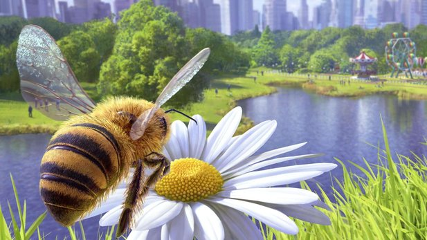

Warum das Bienchen-und-Blümchen-Game made in Polen trotz des kreativen Ansatzes spielerisch scheitert – und wieso es summ summa summarum dennoch auf eine ganz besondere Art und Weise unterhält.
Wer glaubt, mit dem Kauf des Bee Simulators eine akkurate Simulation serviert zu bekommen, kann genauso gut erwarten, dass Biene Majas Kumpel Willi eines Tages endlich mal seinen verdammten Job als Drohne macht und die Königin schwängert. Wir haben entgegen dem irreführenden Titel hier nämlich ein normales Actionspiel - eines relativ simpler Machart sogar. Die größten Stärken des Bee Simulator sind dafür die anrührende Geschichte und originelle, weil unverbrauchte Heldenrolle.
Nachdem der Spieler wie in Fallout 3 die Geburt seines Alter Egos erlebt hat, bekommt das Kind zunächst einen Namen. Wir beschließen, Sabiene Maier schlüpfen zu lassen, kurz: Bine. Dem Baby steht im Bienenstock sofort eine Tutorin zur Seite. Lehrerin Alice erleichtert ihrem Schützling den Einstieg, auch während eines ersten Ausflugs in die nähere Umgebung, klingt allerdings ein bisschen wie eine TV-Märchenerzählerin.
Ein Hauch von The Witcher 3
Sabiene Maier soll während ihres Abenteuers die Welt retten (Überraschung!). Nette Zwischensequenzen (minimalistisch animierte Trickfilme in Kinderbuch-Optik) erzählen die Geschichte ihres Bienenstocks, der dem Untergang geweiht ist. In der Realität schuftet eine Biene erst als Reinigungsfachfrau, Kindermädchen, Bauarbeiterin und Soldatin. Im Spiel befördert Queen Mum die geflügelte Protagonistin nach einem erfolgreichen Vorstellungsgespräch aber gleich zur Honigsammlerin. So geht Karriere!
Und so summt Bine in der Verfolgerperspektive durch eine vom New Yorker Central Park inspirierte Flora und schaltet im Rahmen von sieben Storykapiteln neue Bereiche frei. Dazu ertönt stimmungsvolle klassische Musik des Witcher 3-Komponisten Mikolai Stroinski. Eine ganze Menge anderer Tiere füllt den Bee Simulator mit Leben. Die hölzern animierten Schaufensterpuppen hingegen - führende Anthropologen vermuten, es könnte sich um Menschen handeln - gehen gerade noch so als erträglich durch. Die insgesamt hübsch bunte Optik kaschiert dankenswerterweise solche Mängel.
Lets dance!
Viel Zeit verbringt Bine damit, die offene Welt zu erkunden. Dort lauern mehrere Minigames, hauptsächlich Wettflüge, Kämpfe sowie Sammel- und Tanzherausforderungen. Letztgenanntes steht für die Bienensprache und erinnert vom Ablauf her an das Spiel Senso. Bienchen Maier muss sich freilich keine Farben merken, sondern die Bewegungen ihres Gegenübers. Anschließend turnt sie alles nach. Der Spieler drückt in der richtigen Reihenfolge auf die Links- Rechts- Vorwärts- und Rückwärtstasten, fertig!
Der Bee Simulator unterscheidet im Rahmen seiner zwei Schwierigkeitsgrade zwischen Kinder- und Erwachsenen-Steuerung. Das wirkt sich am stärksten auf Kämpfe aus. Bei der leichten Variante gilt es wie bei Musik-Spielen à la Guitar Hero, im richtigen Rhythmus die linke und rechte Maustaste zu drücken.
Für die schwierigere Fassung des Quicktime-Events benötigt der Spieler alle Richtungstasten. Er muss blitzartig auf die Attacken des Gegners reagieren, um sie zu blocken. Weil Angriffe von oben, unten, rechts oder unten kommen und das Zeitfenster klein ist, geht nichts ohne Übung. Wir haben hier quasi ein simples Fighting Game vor uns. Randnotiz: Bine kämpft vor allem gegen Wespen, Bienen, Wespen, Wespen und zur Abwechslung sogar mal gegen Wespen. Ja, die Artenvielfalt ist bei den Gegnern gering.
Während der Wettflüge muss Bine Maier durch Checkpoint-Ringe und darf sich nicht von den computergesteuerten Insekten abhängen lassen. Bestimmter Pollen verleiht kurzzeitig ... nein, nicht Flügel, sondern einen Düsenantrieb. Sammelherausforderungen laufen ähnlich, hier steuert die Weltenretterin bestimmte Pflanzen an - im leichten Modus ohne laufende Stoppuhr. Der Bee Simulator ist insgesamt nicht sonderlich herausfordernd. Nach rund drei Stunden endet die Story.
Quelle: Gamestar, Bee Simulator im Test, entnommen am 8.01.2020